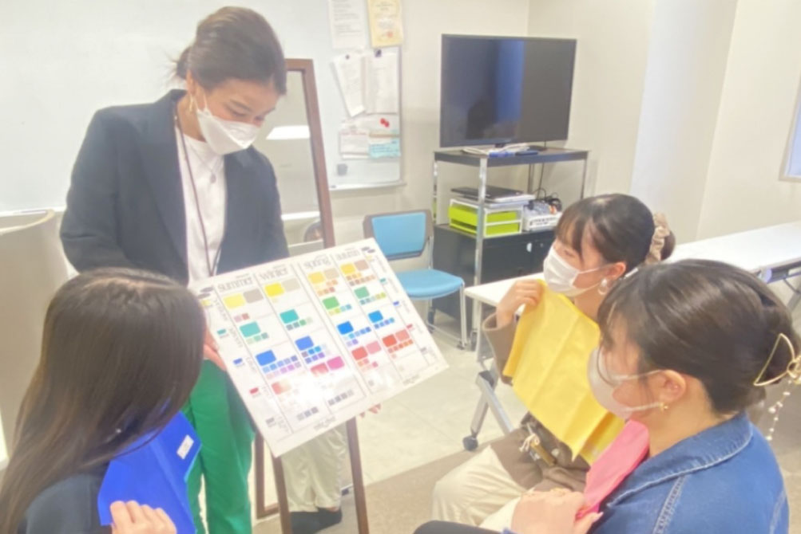

ブライダル科
- プランナーコース／ビューティーコンシェルジュコース
- ライフイベントプロデュース・大学コース
-
最新技術を活用した演出によって
主役やゲストを輝かせ
人生のあらゆる節目のイベントを
感動的にプロデュース - 結婚式を始め、七五三、成人式、金婚式、長寿の祝いなど、人生のあらゆる節目のイベントをプロデュースする提案力を身につけます。また、VRやICTなどの技術を活用することで「不可能を可能にする」イベントを開催。主役のみならずゲストも輝かせます。
学びPICK UP!
2022年2月22日「模擬挙式・模擬披露宴」
模擬挙式・模擬披露宴！ 応援してくださった皆様、配信を見てくださった皆様 昨日無事に終える事ができました！ 心から感謝しています＾＾ 本当にありがとうございました♪ (みんなの心にもう１名のクラスメイトと共...
続きを読む- 【目指せる職種】
- ウエディングプランナー／ブライダルコーディネーター／ウエディングマネージャー／フリープランナー／ドレススタイリスト／メイクアドバイザー／ウエディングフォトグラファー／ウエディング音響映像／ブライダルフラワーコーディネーター 他
- 【目指せる資格】
- ブライダルコーディネート技能検定／IWPAウェディングプランナー英国資格／ウェディングプランナー資格2級／マナー・プロトコール検定／色彩検定／フォーマルスペシャリスト検定／手話検定／秘書検定／色彩技能パーソナルカラー検定／ネイル検定／手話技能検定／ドレスコーディネーター 他
- 【主な就職先】
- 八芳園／明治記念館／ホテル目黒雅叙園東京／椿山荘／リビエラ東京／エスクリ／アニヴェルセル／ベストブライダル／ミリアルリゾートホテルズ／パレスホテル東京／帝国ホテル／プリンスホテル／星野リゾート／パークハイアット東京／富士屋ホテル／ホテルエミシア東京立川／株式会社ティア／うかい／曽我／TAKAMI BRIDAL／ハツコエンドウ／ベストアンバーサリー／クラウディアコスチュームサービス／フォーシスアンドカンパニー／モリノブライズ／シーマ／プリモジャパン／ケイウノ／杢目金屋／日比谷花壇／丸美屋／エキップ（RMK）／コーセー（JILL STUART）／ルミネ／三越伊勢丹／東芸エンタテイメンツ 他
プランナーコース
新郎新婦やゲストの思いに寄り添う共感力と世界で1つの結婚式、披露宴をコーディネートする高い専門性を兼ね備えたブライダルプランナーをめざします。
ビューティー
コンシェルジュコース
結婚式という晴れ舞台で、息をのむほど美しい姿で新郎新婦を送り出せるよう、記憶に残る最高の姿を演出できる一流のウェディングコーディネーターをめざします。
ライフイベントプロデュース・
大学コース
「海外で活躍するウェディングプランナーに！」「心理学を学びたい！」そんな皆さんの憧れを叶えるために、テクノスの「知識・技術の専門性」と大学の「幅広い学問と教養」を学修します。
もっと大学コースを知りたい方はコチラ学びの特徴
未来を見据えた
学科オリジナルの学び
1年次からプロに学び
実践を繰り返す
基礎ゼミ（演出論）
ブライダルの進行、演出、音響映像、照明技法などの基礎を学びます。前期ではドレスショーを、後期では模擬挙式&模擬披露宴を実施。エンタメ系学科とのコラボレーションも行いコミュニケーション力を培います。
たくさんの仲間とともに
本物の結婚式をプロデュースする
シヴィルマリッジProject
市と連携して、本物のカップル・ご夫婦の結婚式をプロデュースします。企画提案、段取り、当日の運営全てを学生たちが担当し、式をつくり上げる責任とやりがいを体感しながら、プロとしての姿勢を養います。
身につけたスキルを実践する学科ゼミ
基礎ゼミ
模擬挙式
テクノス祭や八芳園で模擬挙式を開催。本物と変わらないウェディングを総合的にプロデュースすることでプロの実力を身につけていきます。
応用ゼミ
シヴィルマリッジProject
ブライダル科の応用ゼミでは、市と連携として本物の結婚式をプロデュースします。企画提案、段取り、当日の運営全てを学生たちが担当し、式をつくり上げる責任とやりがいを体感します。
身につける力&磨く力

自分事にする力
上辺だけのサービスや接客ではお客様の大切な日に寄り添う事はできません。相手の事を自分事に捉えていく目線が必要です。

人を巻き込む力
さまざまな人を巻き込んで結び、相手のためにできる幅を広げていく繋がりを作る力、人を動かす力、チームワーク力が大切です。総合的にまとめるプロデューサーを目指します。

想像力
年代、国、性別関係なく、人を繋げ結ぶことやコネクトする力が必要です。相手の立場で考えることでその時間や空間をどうするかの提案ができるようになります。
在学生レポート
在学生のキャンパスライフを覗いてみよう
学び最新TOPICS
一覧へ描けるキャリア
卒業後の自分をイメージして、
描きたいキャリアを実現しよう!
「卒後ビジョン」で未来を描き、
夢や目標に向けて学ぶのが、テクノスの学修スタイル。
5年後の「自分のありたい姿」を明確にすることで、
今の自分に必要な力がわかり、
学びのプランを立てやすくなります。
在学生の描いた卒後ビジョンを
自分の「卒後ビジョン」を描くことで、
奨学金にチャレンジできる入学方法＆試験
-
Technos
オーディション入学「卒後ビジョン」を用いたプレゼンテーション型の入学方法。評価に応じて「1年次の学費全額免除」等の支援が受けられます。
Technosオーディション
入学の詳細はコチラ -
特待生試験
「卒後ビジョン」を描くことで、どの入学方法を選択した方でも挑戦可能。評価に応じて、学費負担が軽減されます。
特待生試験の
詳細はコチラ
学生や教員と一緒に描く！ オープンキャンパスの
詳細はコチラ
卒業生レポート
社会で活躍する卒業生のキャリアを知ろう
学びを体験できる
オープンキャンパス
業界・学科
体験メニュー
-
憧れのブライダルプランナーのリアルを教えます！
必要なスキルは？業界の未来や可能性は？現役プランナーから聞いてみよう！
-
自分の「似合う」を見つけよう！自分の魅せ方、見え方、大解剖！
 自分に似合う色を知っていますか？パーソナルカラ診断で、洋服やメイク、自分に似合う色を身につけ、もっと素敵な自分を発見しよう。
-
ハレの日を彩るコーディネート。美しさを惹きだす秘訣を知ろう！

あなたの「似合う」を見つけます！骨格診断で、自分が最もスタイルが美しく見えるドレスを選び試着、実際の花嫁さんの気持ちを体感してみよう。
よくある質問
学科Q&A
高校生からの質問
- 1クラス何人? 男女比は??
-
年度にもよりますが、1クラス30人前後です。女性9割：男性1割です。
- (ブライダル科はイベントが盛りだくさんですが、)アルバイトは出来ますか?
-
もちろん可能です。イベント期間中の放課後は少し忙しくなりますが、学生達は調整をしながらアルバイトをしています。また、学校にもブライダル業界のアルバイトの求人が来るので、自身のスキルアップにも繋がる経験も出来ます。
- 人見知りなのですが、私もプランナーになれますか?
-
人見知りな学生も沢山います。それを克服する授業や経験を沢山用意していますので安心してください。日々の授業やイベントを通して、卒業後はきっと社会で活躍出来る人になっていると思います。私たちが全力でサポートしていきます。
- どんな資格が取得できますか?
-
IWPAウェディングプランナー英国資格、ブライダルコーディネート技能検定、フォーマルスペシャリスト検定、ウェディングプランナー資格2級、ウエディングミュージック検定、マナー・プロトコール検定、ネイル検定、色彩技能パーソナルカラー検定、色彩検定、手話検定等々、就職活動や就職後の実務にも役立つ多くの資格にチャレンジ出来ます。
保護者からの質問
- 学費以外でかかる費用はありますか?
-
教科書・教材費、諸経費がかかります。また希望者のみですが、学費に含まれない各種検定料、海外研修費、留学費は別途かかります。
- 卒業したらどんなところで働けますか?
-
ブライダル業界では、主に結婚式場、ゲストハウス、ホテル、レストラン、ドレスショップ、着物企業、ブライダルフラワー企業、ブライダルフォト企業、音響映像企業、また、インフォメーション、美容業界、ファッション業界など、卒業生は最前線で幅広い分野で活躍しております。
- 選考にオーディションがあると聞きましたが…
-
“好き”“憧れ”から描く自分未来…を応援するテクノスでは、Technosオーディションという入学方法があります。課題に挑戦して、見事パスすれば1年次の授業料が全額もしくは半額免除される、というものです。問われるのは「夢を目指す力」と「テクノスで学ぶ力」、英・数・国・理・社・等の学力ではありません。オープンキャンパスで対策講座も実施していますので、今は自信がない方もおもいきって参加してください。詳しい事は、ホームページの各種選考方法、Technosオーディション入学に記載されています。
- 毎日の通学はどんな服装でもいいの?
-
本校では、就職活動や社会人としての身だしなみやマナーを身につけるよう、”ドレスアップデー”とし、スーツで登校する日を週2日設けております。TPOをわきまえ、スーツに合うヘアメイク指導や所作の指導も行っております。